Para poder georreferenciar sin coordenadas específicas de los puntos de control se hará uso
de elementos de referencia como vías, edificaciones, puntos hidrantes, etc.
Para ello se dará clic en la imagen para indicar el punto inicial y un segundo clic en el
punto de la realidad. Se indicarán los puntos necesarios en distintas áreas con el mismo
procedimiento para que las capas se ajusten correctamente.
Se recomienda indicar estos puntos de manera equitativa en toda la imagen.
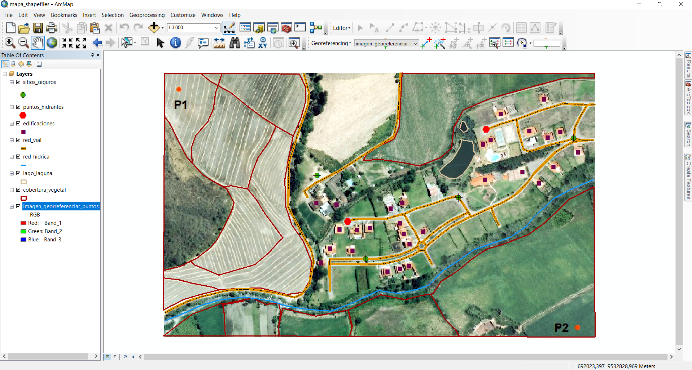
Para la creación de ShapeFiles, se hará uso de la aplicación ArcCatalog, posteriormente del
lado izquierdo se encuentra el panel llamado Catalog Tree y dentro de este se seleccionará
una ubicación en donde se ubicaran los archivos.
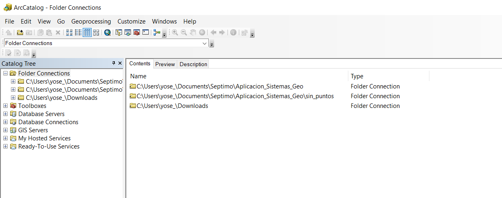
A continuación se dará clic en el menú File > New > Shapefile. Enseguida en la ventana se
ingresará el nombre del shapefile
Luego en Feature Type se dará clic en la flecha para desplegar lista y se seleccionará el
tipo de capa.
Y por último en Spatial Reference se indicará el sistema de referencia, para ello se dará
clic en Edit y se definirá el sistema de coordenadas del shapefile seleccionando o
importando un sistema de coordenadas y una vez seleccionado se dará clic en Aceptar.
Y el nuevo shapefile aparecerá dentro de la carpeta seleccionada.
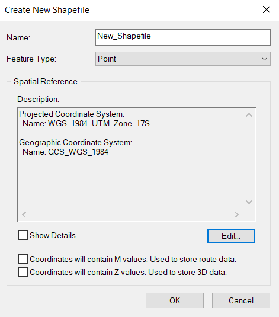
Este proceso consiste en cartografiar los elementos en una imagen.
Para la edición de los shapefiles se hará uso nuevamente de ArcMap. Primeramente se deben
añadir a la Tabla de Contenidos los shapefiles creados, y luego se activará la herramienta
Editor, la cual se ejecutará desde la opción Customize > Toolbars.
Después en Editor > Start editing se activará la edición en el espacio de trabajo.
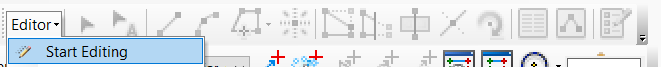
Enseguida en el panel Create Features se encontrarán las capas de los shapefiles y en la
parte inferior en Construction Tools se seleccionará la opción que se editará.
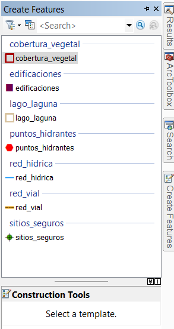
Al haber realizado los cambios necesarios se finalizará la edición, para ello se dirige a
Editor > Stop editing y se guardarán las modificaciones.
Teniendo abierto el panel Create Features, se seleccionará en Construction Tools la
herramienta Point. Nos ubicamos sobre las residencias que queremos marcar y al hacer clic se
fijará el punto.
Así mismo se pueden ingresar dando clic derecho en la edificación correspondiente e ingresar
las coordenadas en diferentes formatos como metros, grados decimales, MGRS, UTM, etc.
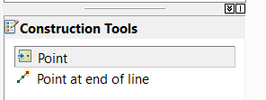
Para digitalizar líneas se selecciona la capa necesaria en el panel Create Features. Para
trazar la línea se señala con un clic el punto inicial y luego se continúa indicando punto
tras punto hasta completar una sección. Para finalizar la línea se hace doble clic en el
último vértice.
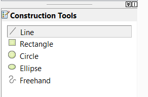
Para trabajar con polígonos en el panel de Create Features se selecciona la capa y se
selecciona el Polygon en el Construction Tools, se marca el primer vértice y luego se
continúa dibujando todo el perímetro, para finalizar igualmente se da doble clic en el
último vértice.
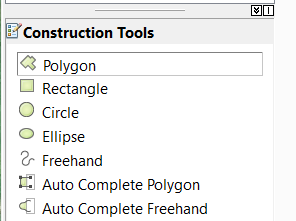
Para la creación de nuevos campos, se dará clic derecho sobre la tabla o en la capa de la
tabla de contenido y enseguida se dará clic en Open Attribute Table.
Daremos clic en el botón de Table Options de la ventana de la tabla.
Posteriormente se dará clic en Add Field, y enseguida se escribe el nombre del campo.
Seguidamente se dará clic en la flecha Tipo y se selecciona el tipo de campo y daremos clic
en Aceptar.
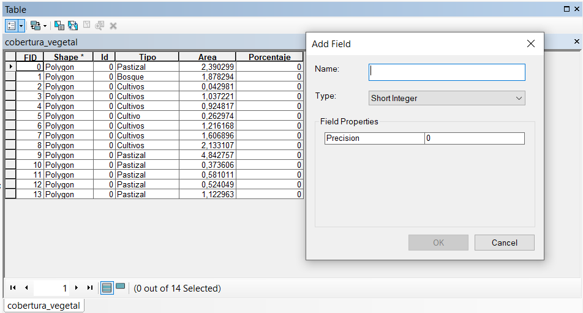
Para agregar información dentro de un campo, es necesario estar en modo de edición, después abrir la tabla de atributos y de esta manera se podrán ingresar directamente los valores a un registro dentro de un campo.
3. Cálculos
Para calcular el área y perímetro, se dará clic derecho sobre la capa seleccionada y
abriremos la Tabla de Atributos.
Luego al dar clic en Add field y asignaremos en el Nombre “Área” o “Perímetro” y en Type
seleccionaremos Double y aceptamos.
Ahora, dando clic derecho en el encabezado del campo requerido (Área) se seleccionará la
herramienta Calculate Geometry.
Después se elige la propiedad geométrica (Área), el sistema de coordenadas y las unidades a
utilizar. Para calcular el perímetro se repite el mismo proceso, pero en este caso se
selecciona la propiedad Perimeter.
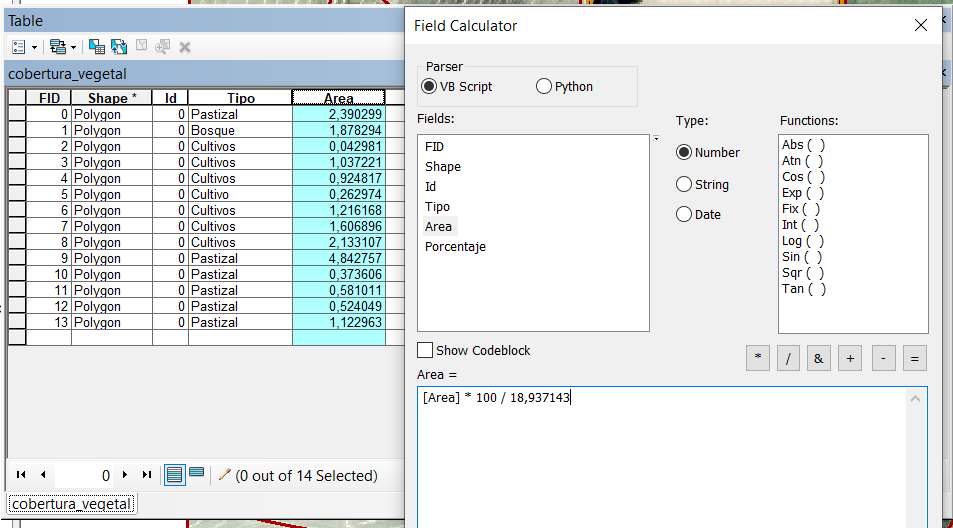
Nos dirigimos al panel ArcToolbox > Data Management Tools > Features en la sección de Input
Features, se selecciona primeramente la capa y daremos clic en Aceptar, después se abrirá la
tabla de atributos en donde se podrá ver que incrementaron los campos con los valores XY de
las coordenadas.
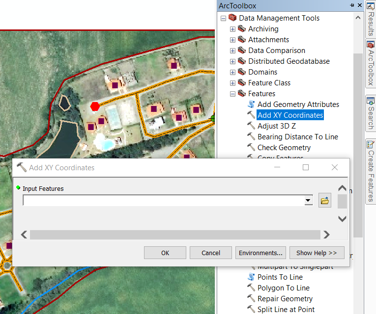
Se pueden realizar operaciones simples y complejas, tanto cadenas de texto como operaciones
matemáticas (sumas, restas, divisiones y multiplicaciones, incluyendo paréntesis).
Para ello nos dirigimos a la Tabla de atributos, damos clic derecho y seleccionamos
Statistics, después hacemos clic derecho sobre el nombre del campo creado y seleccionamos
Field Calculator e ingresamos la expresión.
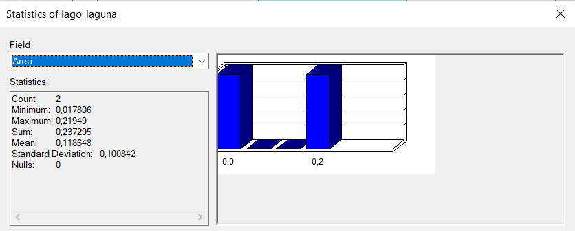